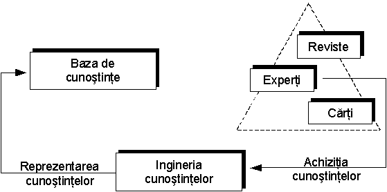
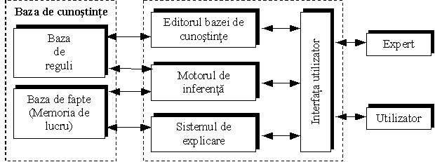
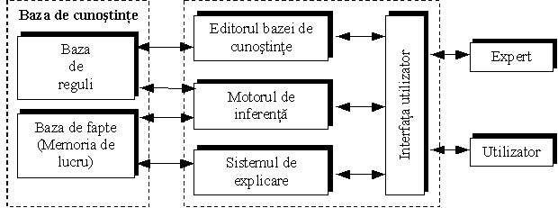

DESPRE SISTEMELE EXPERT
Un sistem expert (SE) este o aplicație complexă (un program software) care explorează o multitudine de cunoștințe date pentru a obține concluzii noi despre activități dificil de examinat, folosind metode asemănătoare cu experții umani. Un sistem expert poate avea succes la problemele fără soluție algoritmică deterministică. Principalele caracteristici ale sistemelor expert sunt:
• o bază de date (bază de cunoștințe), împreună cu
• un algoritm de deducere specific metodei de raționare.
Sistemele expert constituie un domeniu al inteligenței artificiale, ramura informaticii ce are drept scop dezvoltarea de programe și aplicații „inteligente”. Ceea ce este remarcabil pentru sistemele expert este aria largă de aplicabilitate, ce a cuprins deja numeroase domenii de activitate.
ARHITECTURA
Un sistem expert este format din următoarele componente principale:
• Baza de cunoștințe - servește pentru stocarea tuturor elementelor cunoașterii (fapte, reguli, metode de rezolvare, euristici) specifice domeniului de aplicație, preluate de la experții umani sau din alte surse.
• Motorul de inferențe - este un program în care s-a implementat cunoașterea de control, procedurală sau operatorie, cu ajutorul căruia se exploatează baza de cunoștințe pentru efectuarea de raționamente în vederea obținerii de soluții, recomandări sau concluzii.
• Interfața cu utilizatorul - permite dialogul cu utilizatorii în timpul sesiunilor de consultare, precum și accesul acestora la faptele și cunoștințele din bază pentru adăugarea sau actualizarea bazei.
• Modulul de îmbogățire a cunoașterii - ajută utilizatorul expert să introducă în bază noi cunoștințe într-o formă acceptată de sistem sau să actualizeze baza de cunoștințe.
• Modulul explicativ - are rolul de a explica utilizatorilor atât cunoștințele de care dispune sistemul, cât și raționamentele sale pentru obținerea soluțiilor în cadrul sesiunilor de consultare. Explicațiile într-un astfel de sistem, atunci când sunt proiectate corespunzător, îmbunătățesc la rândul lor modul în care utilizatorul percepe și acceptă sistemul (feedback).
REALIZĂRI PRACTICE
Cronologic, primele aplicații ale inteligenței artificiale le-au constituit sistemele expert. Acestea emulează (imită) raționamentul uman pentru sarcini specifice și în domenii restrânse și au fost foarte bine primite de companii.
Primele sisteme expert dezvoltate în domenii aplicative au fost DENDRAL, destinat analizei structurilor moleculare, MYCIN, un sistem expert pentru diagnosticul și tratamentul infecțiilor sanguine, sistemele EMYCIN, HEADMED, CASNET și INTERNIST pentru domeniul medical, PROSPECTOR pentru evaluarea prospecțiunilor și forajelor geologice, sau TEIRESIAS pentru achiziția inteligentă a cunoașterii.
La începutul anilor 1980 apar și primele aplicații comerciale ale sistemelor expert (XCON, XSEL sau CATS-1), care au cunoscut apoi o explozie la începutul anilor 1990. Sistemele expert bazate pe reguli se dezvoltă și se implementează în multe domenii de activitate, inclusiv în cel financiar-contabil: control intern, audit, planificarea impozitelor, diagnostic financiar, raportare financiară, contabilitate managerială, analiză de credite, analiza riscului, planificare de investiții, etc. Marile companii de contabilitate și audit își realizează propriile sisteme expert în domeniului controlului intern și al auditului: ExpertTAX, Risk Advisor (Coopers & Lybrand), Loan Probe, Peat/1040 (KPMG), VATIA, Flow Eval (Ernst & Young), Planet, Compas, Comet (Price Waterhouse), Rice (Arthur Andersen), Audit Planning Advisor, World Tax Planner (Deloitte Touche).

CONCLUZII
Oricum le-am numi, sistemele cognitive sau sistemele inteligente, Sistemele Expert constituie o subramură a tehnologiei Inteligenţei Artificiale şi s-au remarcat deja în numeroase aplicaţii. Sistemele Expert, generatoarele de Sisteme Expert şi chiar generatoarele de sisteme neuronale sunt deja disponibile pe piaţă şi contribuie din plin la modelarea întreprinderii viitorului.
MAI MULTE INFORMAȚII
Elementul central, în jurul căruia gravitează toate celelalte componente ale unui SE, îl reprezintă cunoştinţele. De aceea, SE se mai numesc şi Sisteme Bazate pe Cunoştinţe. În cadrul unui SE, reprezentarea cunoştinţelor se poate face pe mai multe căi, cum ar fi regulile de producţie, cadrele şi cazurile. Dintre aceste forme de reprezentare, cea mai răspândită este cea a regulilor de producţie.
Cadrele (în engleză, frames) reprezintă obiecte complexe care sunt descrise de anumite proprietăţi sau atribute şi anumite proceduri sau metode. Structural, cadrele sunt foarte asemănătoare cu obiectele folosite în cadrul programării la nivel obiect. Astfel, una din proprietăţile cele mai importante ale cadrelor este mecanismul de moştenire, care permite descrierea generică a unui obiect şi crearea de instanţe ale acestuia care moştenesc toate atributele obiectului generic, la care se adaugă şi atribute noi.
Reprezentarea cunoştinţelor sub formă de cazuri are la bază premisa că, pentru a învăţa şi a rezolva probleme complexe, oamenii folosesc raţionamentul analogic sau cel experimental. Cazurile folosite pentru desfăşurarea analogiilor constau în informaţii despre situaţia analizată, soluţia problemei în sine, rezultatele care se obţin prin adoptarea acelei soluţii, anumite atribute care pot evidenţia tipare specifice.
Cunoştinţele folosite de un SE pot fi împărţite în cunoştinţe faptice şi cunoştinţe euristice. Cunoştinţele faptice reprezintă acea parte a cunoştinţelor despre domeniul de interes, care sunt cunoscute şi se găsesc în manuale sau reviste. De cealaltă parte, cunoştinţele euristice reprezintă cunoştinţe mai puţin riguroase, deduse prin experimente şi/sau raţionamente specifice. Aceste cunoştinţe sunt mai puţin formalizate şi reflectă mai degrabă buna practică din domeniul respectiv.
Dezvoltarea unui SE presupune în primul rând culegerea cunoştinţelor relevante de la experţii umani sau de la alte surse. Achiziţia cunoştinţelor în vederea reprezentării lor în programe de calcul nu este în general o sarcină simplă. Ca urmare, s-a dezvoltat o adevărată disciplină a construirii SE, denumită ingineria cunoştinţelor, al cărui principal obiectiv este transferul cunoştinţelor de la sursele uzuale (experţi, cărţi, reviste etc) către baza de cunoştinţe a SE.
Cadrele (în engleză, frames) reprezintă obiecte complexe care sunt descrise de anumite proprietăţi sau atribute şi anumite proceduri sau metode. Structural, cadrele sunt foarte asemănătoare cu obiectele folosite în cadrul programării la nivel obiect. Astfel, una din proprietăţile cele mai importante ale cadrelor este mecanismul de moştenire, care permite descrierea generică a unui obiect şi crearea de instanţe ale acestuia care moştenesc toate atributele obiectului generic, la care se adaugă şi atribute noi.
Reprezentarea cunoştinţelor sub formă de cazuri are la bază premisa că, pentru a învăţa şi a rezolva probleme complexe, oamenii folosesc raţionamentul analogic sau cel experimental. Cazurile folosite pentru desfăşurarea analogiilor constau în informaţii despre situaţia analizată, soluţia problemei în sine, rezultatele care se obţin prin adoptarea acelei soluţii, anumite atribute care pot evidenţia tipare specifice.
Cunoştinţele folosite de un SE pot fi împărţite în cunoştinţe faptice şi cunoştinţe euristice. Cunoştinţele faptice reprezintă acea parte a cunoştinţelor despre domeniul de interes, care sunt cunoscute şi se găsesc în manuale sau reviste. De cealaltă parte, cunoştinţele euristice reprezintă cunoştinţe mai puţin riguroase, deduse prin experimente şi/sau raţionamente specifice. Aceste cunoştinţe sunt mai puţin formalizate şi reflectă mai degrabă buna practică din domeniul respectiv.
Dezvoltarea unui SE presupune în primul rând culegerea cunoştinţelor relevante de la experţii umani sau de la alte surse. Achiziţia cunoştinţelor în vederea reprezentării lor în programe de calcul nu este în general o sarcină simplă. Ca urmare, s-a dezvoltat o adevărată disciplină a construirii SE, denumită ingineria cunoştinţelor, al cărui principal obiectiv este transferul cunoştinţelor de la sursele uzuale (experţi, cărţi, reviste etc) către baza de cunoştinţe a SE.
Reprezentarea cunoştinţelor asigură formalizarea şi organizarea acestora. Cea mai des utilizată schemă de reprezentare a cunoştinţelor este regula de producţie, denumită uneori regula IF – THEN. Regulile de producţie descriu cunoştinţele faptice şi cele euristice pe care le folosesc în mod curent experţii umani. Ansamblul acestor reguli formează baza de reguli a SE, denumită uneori şi bază de cunoştinţe.
O regulă de producţie constă dintr-o condiţie sau premisă, urmată de o acţiune sau concluzie şi are forma IF THEN . În general, partea de acţiune a unei reguli poate conţine : (i) acţiuni cu efect descriptiv, de exemplu afişarea unui mesaj pe ecranul monitorului ; (ii) verificarea unei alte reguli, în cazul sistemelor de reguli înlănţuite şi (iii) adăugarea unui nou fapt în baza de fapte a SE.

SE ce folosesc reguli de producţie implementează două tipuri de strategii :
· Strategii bazate pe date, care utilizează tehnici deductive pentru a stabili noi concluzii, pornind de la un set de date existente.
· Strategii bazate pe scopuri, care utilizează tehnici inductive pentru a verifica o anumită ipoteză.
O regulă de producţie constă dintr-o condiţie sau premisă, urmată de o acţiune sau concluzie şi are forma IF
SE ce folosesc reguli de producţie implementează două tipuri de strategii :
· Strategii bazate pe date, care utilizează tehnici deductive pentru a stabili noi concluzii, pornind de la un set de date existente.
· Strategii bazate pe scopuri, care utilizează tehnici inductive pentru a verifica o anumită ipoteză.
Cea mai comună structură a SE este cea descrisă în Fig. urmatoare Comunicarea între sistem şi utilizator sau expertul uman se realizează prin intermediul unei interfeţe special concepute. Celelalte componente importante ale unui SE sunt baza de cunoştinţe, motorul de inferenţă, sistemul de explicare şi editorul bazei de cunoştinţe. În continuare vor fi descrise succint fiecare dintre aceste componente.

Comunicarea între operator şi SE se realizează prin intermediul unei interfeţe specializate, care poate folosi meniurile cu care suntem familiarizaţi din aplicaţiile Windows, dialogul într-un limbaj natural sau orice altă formă de interacţiune. Pentru simplificarea comunicării este de dorit ca interfaţa utilizator să fie cât mai prietenoasă şi inteligentă, adică să ştie cum să prezinte informaţiile şi să cunoască preferinţele utilizatorului.

Comunicarea între operator şi SE se realizează prin intermediul unei interfeţe specializate, care poate folosi meniurile cu care suntem familiarizaţi din aplicaţiile Windows, dialogul într-un limbaj natural sau orice altă formă de interacţiune. Pentru simplificarea comunicării este de dorit ca interfaţa utilizator să fie cât mai prietenoasă şi inteligentă, adică să ştie cum să prezinte informaţiile şi să cunoască preferinţele utilizatorului.
La nivelul unui SE, baza de cunoştinţe are doua componente : baza de reguli şi baza de fapte. Baza de reguli conţine cea mai mare parte a cunoştinţelor necesare rezolvării problemelor. SE complexe folosesc baze de reguli cu un număr mare de reguli, de la câteva sute, până la câteva mii. Baza de reguli reprezintă memoria pe termen lung a sistemului, deoarece conţine partea hard a cunoştinţelor folosite de SE.
De partea cealaltă se află memoria pe termen scurt sau memoria de lucru, formată din baza de fapte, ce descrie contextul problemei şi conţine datele de intrare, cele de ieşire şi orice date intermediare produse ca urmare a desfăşurării inferenţelor de către motorul de inferenţă.
Reprezentarea şi organizarea bazei de cunoştinţe sunt două aspecte esenţiale pentru funcţionarea corectă a SE. Dacă se doreşte ca după formarea SE acesta să se poată dezvolta este absolut necesar ca baza de cunoştinţe să fie complet separată de restul sistemului.
De partea cealaltă se află memoria pe termen scurt sau memoria de lucru, formată din baza de fapte, ce descrie contextul problemei şi conţine datele de intrare, cele de ieşire şi orice date intermediare produse ca urmare a desfăşurării inferenţelor de către motorul de inferenţă.
Reprezentarea şi organizarea bazei de cunoştinţe sunt două aspecte esenţiale pentru funcţionarea corectă a SE. Dacă se doreşte ca după formarea SE acesta să se poată dezvolta este absolut necesar ca baza de cunoştinţe să fie complet separată de restul sistemului.
Mecanismul specific care permite simularea raţionamentelor desfăşurate de expertul uman este inferenţa. Conform definiţiei de dicţionar (DEX), inferenţa este operaţia logică de trecere de la un enunţ la altul şi în care ultimul enunţ este dedus din cel anterior.
Motorul de inferenţă controlează modul şi succesiunea în care se aplică cunoştinţele din baza de reguli asupra datelor din baza de fapte. De fapt, motorul de inferenţă este un program de calcul care aplică regulile asupra faptelor, pentru a genera prin inducţie, fie fapte noi care se adaugă în baza de fapte, fie confirmarea sau infirmarea unei ipoteze, fie soluţia propriu-zisă a problemei.
În principiu, motorul de inferenţă conţine un interpretor, care analizează şi procesează regulile din baza de reguli şi un planificator, care stabileşte ordinea în care se aplică regulile. Motorul de inferenţă parcurge baza de reguli, căutând identificarea unei corespondenţe între faptele din condiţiile sau consecinţele regulilor şi informaţiile existente în baza de fapte. În momentul în care se identifică o asemenea corespondenţă, regula respectivă este folosită pentru a produce un nou fapt sau pentru a confirma o ipoteză.
La nivelul planificatorului, selectarea regulii care se aplică la un moment dat foloseşte una din următoarele strategii :
· Selectarea regulii celei mai specializate. Dintre două reguli –X şi Y – se selectează cea care conţine numărul maxim de condiţii, considerată ca fiind specializată, în raport cu cealaltă, care are un caracter general.
· Selectarea regulii celei mai productive. Dintre două reguli –X şi Y – se selectează cea care conţine numărul maxim de consecinţe, adoptând ipoteza că “mai mult înseamnă mai bine „.
· Selectarea euristică. Dintre mai multe reguli care pot fi aplicate la un moment dat, se alege cea care conduce baza de fapte cât mai aproape de starea dorită.
· Selectarea pe baza încrederii. Unora dintre reguli li se acordă o încredere sporită, iar la selectarea regulii care se aplică la un moment dat se ţine seama cu prioritate de încrederea acordată regulilor.
Motorul de inferenţă controlează modul şi succesiunea în care se aplică cunoştinţele din baza de reguli asupra datelor din baza de fapte. De fapt, motorul de inferenţă este un program de calcul care aplică regulile asupra faptelor, pentru a genera prin inducţie, fie fapte noi care se adaugă în baza de fapte, fie confirmarea sau infirmarea unei ipoteze, fie soluţia propriu-zisă a problemei.
În principiu, motorul de inferenţă conţine un interpretor, care analizează şi procesează regulile din baza de reguli şi un planificator, care stabileşte ordinea în care se aplică regulile. Motorul de inferenţă parcurge baza de reguli, căutând identificarea unei corespondenţe între faptele din condiţiile sau consecinţele regulilor şi informaţiile existente în baza de fapte. În momentul în care se identifică o asemenea corespondenţă, regula respectivă este folosită pentru a produce un nou fapt sau pentru a confirma o ipoteză.
La nivelul planificatorului, selectarea regulii care se aplică la un moment dat foloseşte una din următoarele strategii :
· Selectarea regulii celei mai specializate. Dintre două reguli –X şi Y – se selectează cea care conţine numărul maxim de condiţii, considerată ca fiind specializată, în raport cu cealaltă, care are un caracter general.
· Selectarea regulii celei mai productive. Dintre două reguli –X şi Y – se selectează cea care conţine numărul maxim de consecinţe, adoptând ipoteza că “mai mult înseamnă mai bine „.
· Selectarea euristică. Dintre mai multe reguli care pot fi aplicate la un moment dat, se alege cea care conduce baza de fapte cât mai aproape de starea dorită.
· Selectarea pe baza încrederii. Unora dintre reguli li se acordă o încredere sporită, iar la selectarea regulii care se aplică la un moment dat se ţine seama cu prioritate de încrederea acordată regulilor.
Unele SE sunt dotate cu un editor pentru baza de cunoştinţe, care ajută utilizatorul, expertul sau inginerul de cunoştinţe să actualizeze şi să verifice conţinutul bazei de cunoştinţe şi, în special, conţinutul bazei de reguli. Existenţa editorului asigură totodată o dezvoltare comodă a sistemului, după implementarea sa.

CONTACT INFO
Adresă
Str. Ciocârliei, nr. 3
craciunmihai40@gmail.com
TELEFON
+(40) 775 579 053